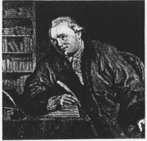

|
(2 - Bibliografie; 3 - Karakter; 4 - Uiterlijke kenmerkenen; 5 - Conclusie)
1 - Biografie
Johann Andreas Kauchlitz Colizzi (ca. 1742-1808) is afkomstig uit Grudim, een stad in de Bohemen (tegenwoordig Chrudim, Tsjechië). Helaas is deze afkomst tot op heden niet bevestigd door het bevolkingsregister aldaar, maar mede gezien Colizzi’s beheersing van het Tsjechisch(1), mag Colizzi’s opgave (bij zijn inschrijving aan de Leidse universiteit) van zijn afkomst voor waar worden aangenomen. De achternaam ‘Colizzi’ is vermoedelijk de Italiaanse versie van zijn derde voornaam Kauchlitz; mischien een cosmetische ingreep, om aan zijn positie als leraar in de Italiaanse taal meer gewicht te verlenen? Na omzwervingen door Europa(2) arriveerde hij in 1766 in Leiden. Op 15 juni van dat jaar schreef hij zich in aan de Leidse universiteit als taalleraar. Behalve taalleraar was Colizzi ook musicus: als universiteitsmusicus, als muziekleraar, en als muziektheoreticus.
Na zijn huwelijk vestigde Colizzi zich in 1777 in Den Haag, waar hij actief was als hofmusicus, en wederom als muziekleraar. Zo gaf hij onder andere Louise van Oranje Nassau en prins Willem, de latere Koning Willem I, les.
Colizzi heeft een omvangrijk oeuvre nagelaten,
|
|

J.A.K. Colizzi, Gravure van B. Coclers, Prentenkabinet, Leiden
dat naast een aantal muziektheoretische geschriften, uit een groot aantal composities van diverse aard bestaat.
|
2 - Bibliografie
Muziektheoretische werken van Colizzi:
- - Effets merveilleux de la musique. ... 1772. Handschrift. Amsterdam, Toonkunstbibliotheek.
- - Dissertatio de sono. Accedit novi instrumenti descriptio. Leiden, J.J. Thyssens, 1774.
- - Lotto musical, ou Direction facile pour apprendre en s'amusant à connaître les differénts charactères de musique. ... ... Advertentie Haagsche Courant 28.6.1787. Amsterdam, Toonkunstbibliotheek.
- - Librorum musicorum catalogus, quibus usus est Jean Colizzi. Handschrift 206-C-11. Amsterdam, Toonkunstbibliotheek.
- - Compositione de musica. ... Afschrift met Nederlandse vertaling door H.C Claterbosch, 1836. Amsterdam, Toonkunstbibliotheek.
Literatuur over Colizzi:
- - Catalogus inboedelveiling 1808 (1975 exemplaar Staring te Vorden).
- - J. Doove, ‘Johan Andrea Kauchlitz Colizzi (1742-1808): Musicus, etser, docent en kruidkunde’, en: ‘De Haagse periode van Johan Colizzi’ in: Mens en Melodie 30 (1975), p. 104-106; p. 151-154.
- - Jan A.F.Doove & J. Luc Knödler, een Ding van Parade. 400 jaar muziek aan de Leidse universiteit. Koudekerk aan de Rijn, New Rhine Publications, 1975.
- - (anon.), ‘Colizzi’ in: New Grove. New York, MacMillan, 1980. p. 532
- - R.A. Rasch, ‘Colizzi’ in: Muziek in de Republiek. Syllabus, UU, 1995. p. 117
3 - Karakterschets: aard, opzet, omvang, indruk, en doelgroep
Hoewel Dissertatio op het titelblad prijkt, is de verhandeling nooit als zodanig, als proefschrift ter verkrijging van de graad van doctor, gebruikt. Volgens Doove had er dan op de titelpagina: ‘... welke J.A.K. Colizzi in het openbaar verdedigd heeft’(3) moeten staan. Uit het feit dat de verhandeling wel als zodanig gebruikt had kunnen worden, maar niet is, leidt Doove(4) af dat Colizzi al in zijn vaderland academische vorming had ontvangen.
Daarnaast is het zo dat er op het titelblad, na de naam J.A.K. Colizzi, het opschrift B. Ch. staat, hetgeen vermoedelijk Baccalaureus Chemicus betekent. Het is mogelijk dat dit erop duidt dat Colizzi een academische opleiding had afgerond, maar hij zou die titel bijvoorbeeld ook gekocht kunnen hebben.
De New Grove noemt de verhandeling ‘a short but erudite treatise’(5), en dit is zeker het geval. Het werk is 23 pagina's groot en het is in het Latijn geschreven. Er zijn 45 verwijzingen naar andere auteurs, de voetnoten bevatten Engelse, Franse, Italiaanse, en Tsjechische tekst.
De meeste verwijzingen zijn naar auteurs uit de 17de en 18de eeuw, auteurs van zowel muziektheoretische werken (bv M. Mersenne, Harmonie Universelle, 1620), maar ook auteurs van natuurwetenschappelijke teksten (bv Willem J. ’s Gravesand, Physices elementa mathematica, 1720-21). Behalve op contemporaine, doet Colizzi ook een beroep op auteurs uit een verder verleden, bijvoorbeeld op Aristoxenos.
Colizzi citeert niet alleen om zijn betoog te ondersteunen, maar ook om te polemiseren met diegenen, die in zijn ogen onjuiste opvattingen hebben. Hij valt bijvoorbeeld J. Mattheson aan; of merkt op dat de legende, die verhaalt dat Pythagoras de getalsverhoudingen van de eenvoudige consonanten (kwint, kwart) uitvond toen hij slaande hamers hoorde, een fabel moet zijn.(6)
Slechts in zeven gevallen citeert Colizzi letterlijk (zoals gezegd uit het Engels, Frans, Italiaans, of Tsjechisch), in de andere gevallen parafraseert hij, of noemt enkel de naam van een auteur als autoriteit voor een bepaalde waarneming, of gedachtengang.
Mede door alle verwijzingen geeft Colizzi's verhandeling een redelijk beeld van wat men in de 18de eeuw wist, en dacht, omtrent de aard van het geluid.
Hoewel Colizzi's zinsbouw slechts als onorthodox valt te kenschetsen, is de moeilijkheidsgraad van het Latijn redelijk. Toch is de tekst hier en daar lastig te volgen, omdat Colizzi een aantal nieuwe woorden (bv. ‘(objecta) phonocamptica’ en ‘anemotheca’), of woorden die een andere, specifieke betekenis hebben, gebruikt. Dit wordt versterkt door het feit dat Colizzi veel bronnen slechts parafraseert, en de lezer bekend veronderstelt met de originele tekst.
Hierdoor (het Latijn en de vele verwijzingen) is de verhandeling naar alle waarschijnlijkheid voor een ontwikkeld, zo niet academisch, publiek bedoeld.
4 - Uiterlijke kenmerken; formaat, indeling
De ‘Verhandeling over het geluid’ is uitgegeven in quarto formaat, bij J.J. Thyssens te Leiden.
Het exemplaar in de Algemene Bibliotheek in Utrecht(7) is afkomstig uit de collectie Utenhoven, een collectie van natuurwetenschappelijke werken, bijeengebracht door J.M.C. baron van Utenhoven van Heemstede (1773-1836). Zijn verzameling werd kort na zijn dood door zijn weduwe aan de Utrechtse bibliotheek geschonken. Het belang van de collectie Utenhoven is gelegen in de vele zeldzame, oude en nieuwe natuurwetenschappelijke werken(8).
De volledige titel luidt: ‘Wetenschappelijke verhandeling over het geluid. Daaraan toegevoegd de beschrijving van een nieuw muziekinstrument’(9). Dit suggereert een tweedeling, maar Colizzi maakt deze niet. Hij behandelt het nieuwe muziekinstrument aansluitend, in het laatste hoofdstuk, zonder een aparte titel; het slotwoord volgt hier direct op.
Zoals gezegd bestaat het werk uit 23 bladzijden, die over veertien hoofdstukken verdeeld zijn. De kleinste hoofdstukken beslaan één, of driekwart pagina (bijvoorbeeld hoofdstuk drie), het grootste hoofdstuk (acht) beslaat vier-en-een-halve pagina. Dit achtste hoofdstuk kent een onderverdeling in paragrafen, de andere hoofdstukken kennen zo'n verdeling niet.
Het veertiende hoofdstuk bevat een viertal illustraties: een afbeelding en de constructiewijze van het ‘nieuwe instrument’. Deze illustraties zijn aangebracht op een vouwblad, dat tussen de 22ste en de 23ste pagina is bevestigd.
Pagina één is het titelblad, pagina twee bevat het motto: een gedeelte van een tekst van de Franse schrijver M. Serre(10). De strekking van het motto is dat de muziek, behalve een aangenaam tijdverdrijf, toch onderwerp kan zijn voor enige overpeinzingen. Op pagina drie begint de eigenlijke tekst.
5 - Conclusie
Colizzi gebruikt nergens wiskundige vergelijkingen om akoustische fenomenen te beschrijven. Daarnaast bevat zijn verhandeling geen wetenschappelijk onderzoek van Colizzi zelf, maar hij citeert, of verwijst, naar een groot aantal bronnen van uiteenlopende aard.
Hieruit leid ik af dat Colizzi zowel voor zichzelf alswel voor een niet-natuurkundig publiek - als geïnteresseerde leek en musicus - een aantal onderdelen van de wetenschappelijke kennis van zijn tijd omtrent de aard van het geluid (kennis die ook van toepassing is op muzikale geluiden) heeft willen samenvatten.
Noten
1. Zie Dissertatio hoofdstuk 8, par. 1 - noot i). Daarnaast, op pagina 19 schrijft Colizzi ‘In horto monasterii S. Margarethae ord. S. Benedicti, prope Pragam, regni Bohemiae metropolim, inveni echum ...’ (‘In de tuin van het klooster van St. Margaretha, in de buurt van Praag, de hoofdstad van het koninkrijk Bohemen, heb ik een echo aangetroffen ...’). Deze informatie is zo specifiek dat ze kan dienen als sterke aanwijzing voor Colizzi’s Tsjechische afkomst. (Het zelfde geldt voor pag. 20 ‘Observavi ... prope Kuttenbergam supradicti regni Bohemiae civitatem ....’).
2. Tijdens zijn aanwezigheid in Brunswijk (Du.) gaf Colizzi een muziekbundel Recueil de chansons, avec accompagnement du Clavecin uit in Neurenberg (1765). Zie Doove, Mens en Melodie 30 (1975) p. 104 en de New Grove p. 532.
3. ‘... quam J.A.K. Colizzi publice defendit.’ Mens en Melodie 30 (1975): p. 104
4. Mens en Melodie 30 (1975): p. 106
5. New Grove: p. 532
6. Dissertatio. p. 4 (Mattheson) en 9 (Pythagoras).
7. Utrecht, Universiteitsbibliotheek. Signatuur: Bibl. Utenh. Quart. no. 303.
8. D. Grosheide, A.D.A. Monna, en P.N.G. Pesch, Vier eeuwen Universiteitsbibliotheek Utrecht. Deel I: de eerste drie eeuwen. Utrecht 1986. p. 185
9. Dissertatio philosophica de sono. Accedit novi instrumenti descriptio.
10. M. Serre, Essays sur les principes de l’harmonie. Paris, Prault, 1753. facs.ed. Hildesheim, Olms, 1986. p. 6

|